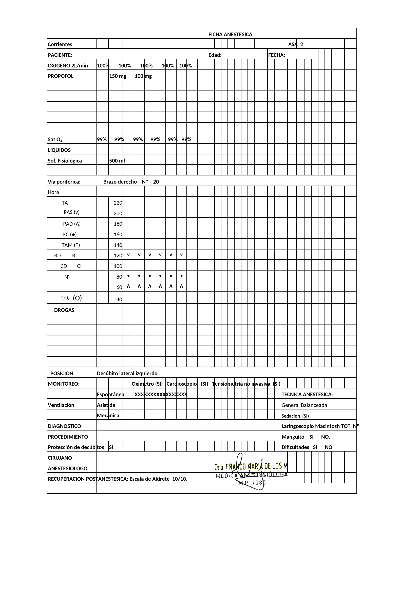

{{ sanatorio }}
{{ paciente }}
{{ edad }}
{{ fecha }}
{{ procedimiento }}
{{ cirujano }}
{{ anestesiologo }}
{{ hora_0 }}
{{ hora_1 }}
{{ hora_2 }}
{{ hora_3 }}
{{ hora_4 }}
{{ hora_5 }}
{{ hora_6 }}